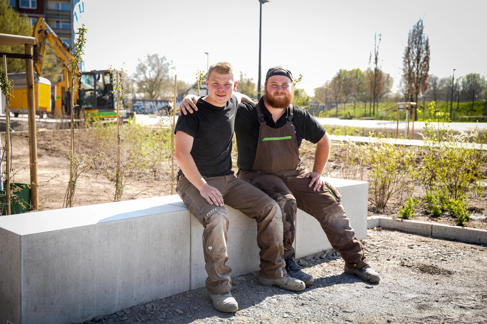
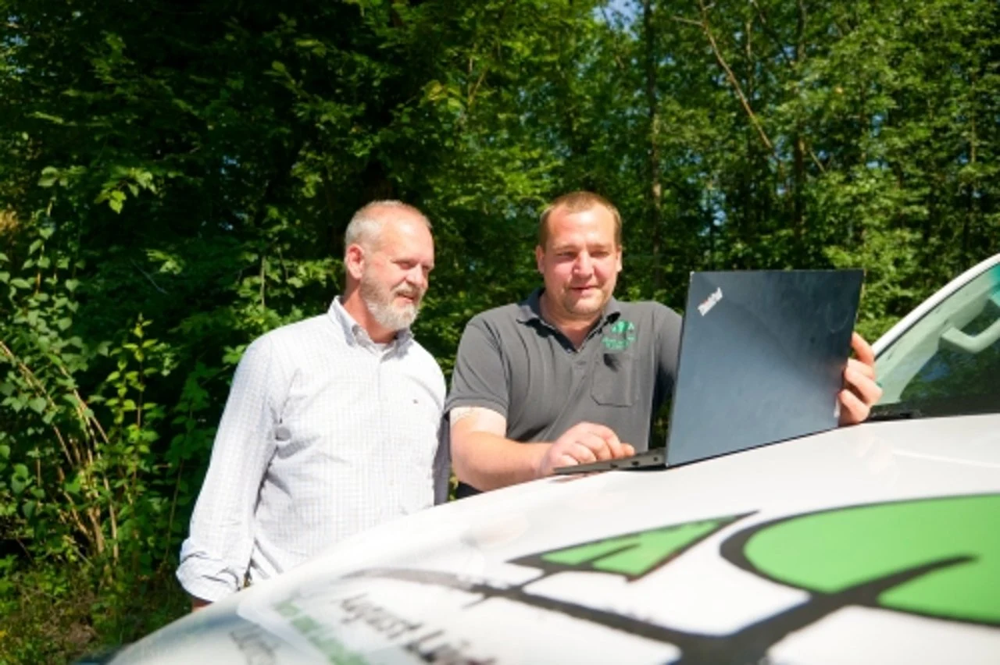
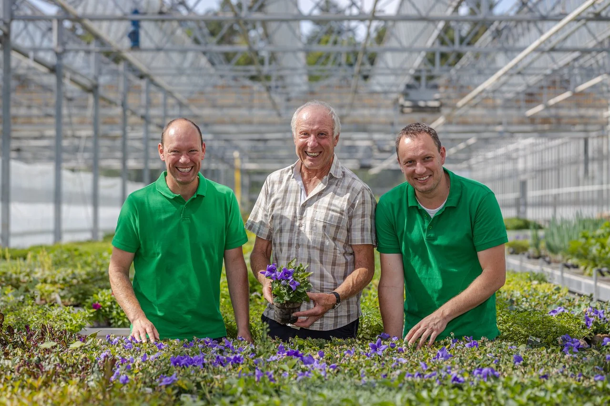

Sollazzo & Wetzel
Projektleiter im Garten- und Landschaftsbau
Recruiting für GaLaBau, Baumschulen und Gartencenter. Wir zeigen Fachkräften deinen Betrieb, erleichtern die Bewerbung und unterstützen dich bei der Vorqualifizierung.



Über 700 Betriebe konnten von unserer Expertise profitieren
Wir verbinden Arbeitgeberauftritt, gezielte Ansprache und einen einfachen Bewerbungsweg. Gemeinsam prüfen wir, welche Kontakte zu deinem Bedarf passen.

01 — Effizienz
Wir begleiten die Bewerbergewinnung von der Anzeige bis zur abgestimmten Vorqualifizierung. So kannst du dich auf die persönlichen Gespräche und die Auswahl konzentrieren.

02 — Wirtschaftlichkeit
Wir planen Kampagnen und Budget gemeinsam. Bewerbungen, Gespräche und Einstellungen zeigen, wie wirksam die Maßnahmen für deinen Betrieb sind.
03 — Qualität
Wir richten die Ansprache auf gesuchte Aufgaben und Qualifikationen aus. Die Vorqualifizierung liefert eine Grundlage für deine Auswahl; die persönliche Passung klärt ihr im Gespräch.
Wir platzieren deinen Betrieb authentisch dort, wo deine Wunschkandidaten ihre Zeit verbringen – mit Content, der hängen bleibt.
Durch gezieltes Retargeting bleibst du im Kopf. Kandidaten sehen dich mehrfach – und bauen Vertrauen auf.
Ein einfacher, mobiler Bewerbungsprozess macht es Interessenten leicht, in wenigen Klicks Kontakt aufzunehmen.
Echte Einblicke in deinen Betrieb schaffen Nähe und Vertrauen – die Basis für langfristige Einstellungen.
Wir analysieren deinen Bedarf, deine Zielgruppe und deine Positionierung als Arbeitgeber.
Wir entwickeln Kampagnen und Content, der genau deine Wunschkandidaten erreicht.
Wir prüfen Eignung und Motivation – du sprichst nur mit wirklich passenden Bewerbern.
Wir begleiten dich bis zur erfolgreichen Einstellung und einem reibungslosen Start.
Echte Teams, ehrliche Einblicke und Arbeit, auf die man stolz ist. Entdecke, wie wir Arbeitgeber aus der grünen Branche zeigen.
Projektleiter im Garten- und Landschaftsbau
Baumschulgärtner: Arbeiten mit Pflanzen
Pflanzenfachberatung mit Leidenschaft
Arbeiten im grünen Team
Gärtner in der Staudenproduktion
Gärten bauen. Gemeinsam im Team.
Als Teamleiter Verantwortung übernehmen
Ausbildung im Betrieb
Einblicke in unsere Produktionen. Die gezeigten Stellenangebote stammen aus den jeweiligen Kampagnen.
Kundenstimmen
Menschen aus der grünen Branche erzählen, was sich durch unsere Zusammenarbeit verändert hat.
Alle Erfolgsgeschichten ↗1 Bauleiter & 2 ausgebildete Landschaftsgärtner eingestellt
Florian Scheidtmann · Geschäftsführer
„Das hat mich brutal überrascht.“
Tobias Stierle · Betriebsleiter
„Greenfield Digital arbeitet äußerst professionell und liefert sehr gute Ergebnisse in kurzer Zeit.“
Carlo Huben & Anna Schick
GALABAU
Ein persönlicher Einblick in die Zusammenarbeit mit Greenfield Digital.
Michael Bleichner · Geschäftsführer
GALABAU
Ein persönlicher Einblick in die Zusammenarbeit mit Greenfield Digital.
Vincent Schmitt · Geschäftsführer
Kundenfilme von Vimeo. Erst beim Abspielen wird eine Verbindung zu Vimeo hergestellt.
Unser bewährter Prozess für deine Fachkräftegewinnung. Lass uns über deinen Bedarf sprechen.

Wir haben alles erhalten und melden uns innerhalb von 48 Stunden persönlich bei dir.
Lass uns herausfinden, wie dein Betrieb als Marke wächst – und die richtigen Menschen gewinnt.
Kostenloses Gespräch vereinbaren